Метод Рунге-Кутта решения дифференциальных уравнений и их систем
Метод позволяет решать системы обыкновенных дифференциальных уравнений (ОДУ) первого порядка следующего вида:
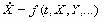,
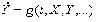,
и т.д.,
которые имеют решение:
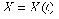,
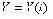,
и т.д.,
где t – независимая переменная (например, время); X, Y и т.д. – искомые функции (зависимые от t переменные). Функции f, g и т.д. – заданы. Также предполагаются заданными и начальные условия, т.е. значения искомых функций в начальный момент.
Одно дифференциальное уравнение – частный случай системы с одним элементом. Поэтому, далее речь пойдет для определенности о системе уравнений.
Метод может быть полезен и для решения дифференциальных уравнений высшего (второго и т.д.) порядка, т.к. они могут быть представлены системой дифференциальных уравнений первого порядка.
Метод Рунге-Кутта заключается в рекурентном применении следующих формул:
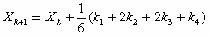
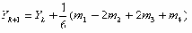
...
где
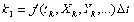,
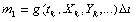,
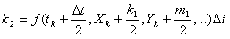,
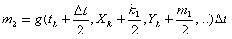,
 ,
,
 ,
,
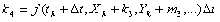,

Реализация Метода Рунге-Кутта на Delphi может выглядеть так (привожу полностью модуль):
unit RK_Method; interface type TVarsArray = array of Extended; // вектор переменных включая независимую TInitArray = array of Extended; // вектор начальных значений TFunArray = array of function(VarsArray: TVarsArray ):Extended; // вектор функций TResArray = array of array of Extended; // матрица результатов TCoefsArray = array of Extended; // вектор коэффициетов метода function Runge_Kutt( // метод Рунге-Кутта FunArray: TFunArray; // массив функций First: Extended; // начальная точка по независимой координате Last: Extended; // конечная точка по независимой координате Steps: Integer; // число шагов по независимой координате InitArray: TInitArray; // вектор начальных значений var Res: TResArray // матрица результатов включая независ. переменную ):Word; // возвращаемое значение - код ошибки implementation Function Runge_Kutt( // метод Рунге-Кутта FunArray: TFunArray; // массив функций First: Extended; // начальная точка по независимой координате Last: Extended; // конечная точка по независимой координате Steps: Integer; // число шагов по независимой координате InitArray: TInitArray; // вектор начальных значений var Res: TResArray // матрица результатов включая независ. переменную ):Word; // возвращаемое значение - код ошибки var Num: Word; // число уравнений NumInit: Word; // число начальных условий Delt: Extended; // шаг разбиения Vars: TVarsArray; // вектор переменных включая независимую Vars2,Vars3,Vars4: TVarsArray; // значения перем. для 2-4 коэф. Coefs1: TCoefsArray; // вектор 1-ыx коэффициентов в методе Coefs2: TCoefsArray; // вектор 2 коэффициентов в методе Coefs3: TCoefsArray; // вектор 3 коэффициентов в методе Coefs4: TCoefsArray; // вектор 4 коэффициентов в методе I: Integer; // счетчик цикла по иттерациям J: Word; // индекс коэф.-тов метода K: Integer; // счетчик прочих циклов begin Num:=Length(FunArray); // узнаем число уравнений NumInit:=Length(InitArray); // узнаем число начальных условий If NumInit<>Num then begin Result:=100; // код ошибки 100: число уравнений не равно числу нач. усл. Exit; end; Delt:=(Last-First)/Steps; // находим величину шага разбиений SetLength(Res,Num+1,Steps+1); // задаем размер матрицы ответов с незав. перем. SetLength(Vars,Num+1); // число переменных включая независимую SetLength(Vars2,Num+1); // число переменных для 2-го коэф. включая независимую SetLength(Vars3,Num+1); // число переменных для 3-го коэф. включая независимую SetLength(Vars4,Num+1); // число переменных для 4-го коэф. включая независимую SetLength(Coefs1,Num); // число 1-ыx коэф. метода по числу уравнений SetLength(Coefs2,Num); // число 2-ыx коэф. метода по числу уравнений SetLength(Coefs3,Num); // число 3-иx коэф. метода по числу уравнений SetLength(Coefs4,Num); // число 4-ыx коэф. метода по числу уравнений // Начальные значения переменных: Vars[0]:=First; For K:=0 to NumInit-1 do Vars[K+1]:=InitArray[K]; For J:=0 to Num do Res[J,0]:=Vars[J]; // первая точка результата For I:=0 to Steps-1 do // начало цикла иттераций begin For J:=0 to Num-1 do Coefs1[J]:=FunArray[J](Vars)*delt; // 1-й коэфф. // Находим значения переменных для второго коэф. Vars2[0]:=Vars[0]+delt/2; For K:=1 to Num do Vars2[K]:=Vars[K]+Coefs1[K-1]/2; For J:=0 to Num-1 do Coefs2[J]:=FunArray[J](Vars2)*delt; // 2-й коэф. // Находим значения переменных для третьго коэф. Vars3[0]:=Vars[0]+delt/2; For K:=1 to Num do Vars3[K]:=Vars[K]+Coefs2[K-1]/2; For J:=0 to Num-1 do Coefs3[J]:=FunArray[J](Vars3)*delt; // 3 коэфф. // Находим значения переменных для 4 коэф. Vars4[0]:=Vars[0]+delt; For K:=1 to Num do Vars4[K]:=Vars[K]+Coefs3[K-1]; For J:=0 to Num-1 do Coefs4[J]:=FunArray[J](Vars4)*delt; // 4 коэфф. // Находим новые значения переменных включая независимую Vars[0]:=Vars[0]+delt; For K:=1 to Num do Vars[K]:=Vars[K]+(1/6)*(Coefs1[K-1]+2*(Coefs2[K-1]+Coefs3[K-1])+Coefs4[K-1]); // Результат иттерации: For J:=0 to Num do Res[J,I+1]:=Vars[J]; end; // конец итераций Result:=0; // код ошибки 0 - нет ошибок end; end.
Модуль полностью работоспособен. Возвращаемое функцией Runge_Kutt значение – код ошибки. Вы можете дополнить список ошибок по своему усмотрению. Рассчитанные функции системы помещаются в массив Res. Чтобы не загромождать код, в модуле опущены проверки (типа блоков try). Рекомендую их добавить по своему усмотрению.
Ниже приводится описание функции Runge_Kutt и типов, использующихся в модуле.
Function Runge_Kutt (FunArray: TFunArray; First: Extended; Last: Extended; Steps: Integer; InitArray: TInitArray; var Res: TResArray):Word;
Здесь:
FunArray - вектор функций (правых частей уравнений системы);
First, Last - начальная и конечная точки расчетного интервала;
Steps - число шагов по расчетному интервалу;
InitArray - вектор начальных значений
Res - матрица результатов включая независимую переменную.
В модуле описаны типы:
type
TVarsArray = array of Extended; // вектор переменных включая независимую
TInitArray = array of Extended; // вектор начальных значений
TFunArray = array of function(VarsArray: TVarsArray ):Extended; // вектор функций
TResArray = array of array of Extended; // матрица результатов
TCoefsArray = array of Extended; // вектор коэффициетов метода
Функция возвращает коды ошибок:
0 – нет ошибок;
100 - число уравнений не равно числу начальных условий.
Решение содержится в переменной-матрице Res. Первый индекс матрицы относится к переменной (0 – независимая переменная, 1 – первая зависимая и т.д.), второй – к номеру расчетной точки (0 – начальная точка).
Рассмотрим один пример использования модуля. Создадим новое приложение и подключим к нему модуль. На форме приложения разместим кнопку Button1 и область текста Memo1. Поместим в приложение две функции и обработчик нажатия кнопки:
//Задаем функции (правые части уравнений)
function f0(VarArray:TVarsArray):extended;
begin
Result:=4*VarArray[0]*VarArray[0]*VarArray[0];
end;
function f1(VarArray:TVarsArray):extended;
begin
Result:=1;
end;
////////////////////////////////////////////////////////////////////////////////
procedure TForm1.Button1Click(Sender: TObject);
var
I: Integer;
FunArray: TFunArray; // массив функций
First: Extended; // начальная точка по независимой координате
Last: Extended; // конечная точка по независимой координате
Steps: Integer; // число шагов по независимой координате
InitArray: TInitArray; // вектор начальных значений
Res: TResArray; // матрица результатов включая независ. переменную
begin // Создаем вектор функций:
SetLength(FunArray,2);
FunArray[0]:=f0;
FunArray[1]:=f1;
// Задаем интервал и число шагов:
First:=0;
Last:=10;
Steps:=10;
// Задаем начальные условия:
SetLength(InitArray,2);
InitArray[0]:=0;
InitArray[1]:=0;
// Вызов метода и получение результатов:
Memo1.Lines.Clear;
I:=Runge_Kutt(FunArray, First, Last, Steps, InitArray, Res);
ShowMessage('Код ошибки = '+IntToStr(I));
For I:=0 to Steps do
Memo1.Lines.Add(floattostr(Res[0,I])+' '+floattostr(Res[1,I])+' '+floattostr(Res[2,I]));
end;
Нажатие кнопки приведет к расчету точек системы, которые будут выведены в текстовую область.
Copyright© 2006 Андрей Садовой Специально для Delphi Plus